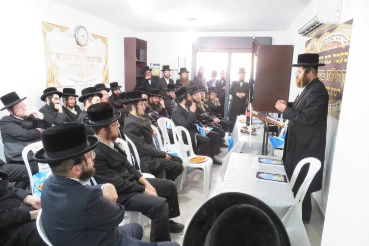
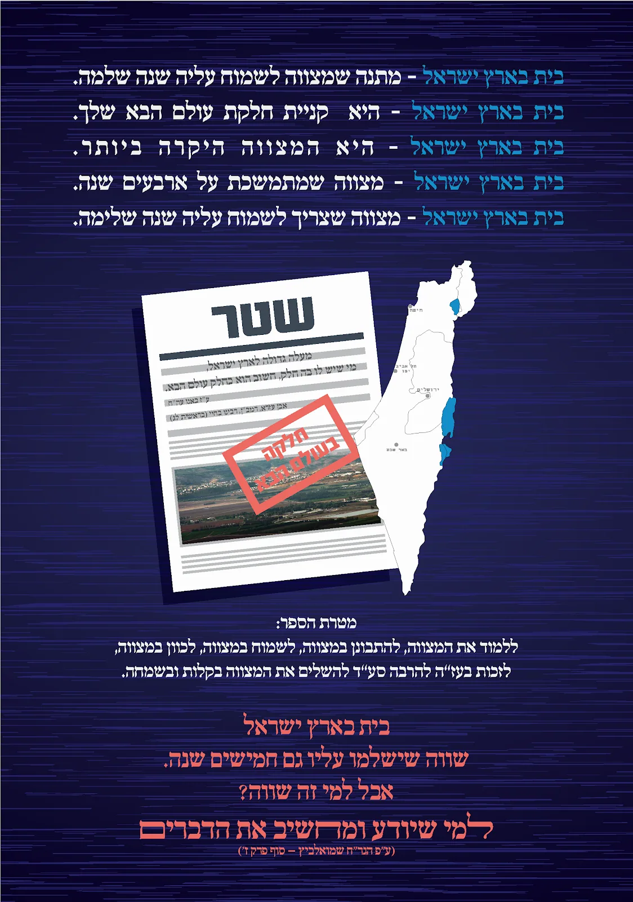

עדויות משתמשים
מספר הרב שמואל פולק – מחיפה
שנים חיפשתי דירה בחיפה, כל פעם זה לא הצליח, או לא היה לי את האומץ להחליט זהו קונים.
יום אחד הגיע אלי הספר 'בית ראובן', ישבתי וקראתי אותו כל הלילה,
התרגשתי התלהבתי מהמצווה העצומה שיש בקנית בית, והחלטתי הגיע הזמן לקיים מצווה זו.
כעבוד 36 שעות זכיתי לחתום על דירת חלומות נפלאה גדולה ויפה בחיפה,
שכן אם זה מצווה צריך לעשות אותה כראוי ובהידור.
בשכונת רמת בית שמש ד' החליטו בחנוכת השכונה לחלק לכל הקונים את הספר בית ראובן

מחלקים בית ראובן - בחנוכת רמת בית שמש דלר' יהודה אריה טאוב השלום והברכה !
ראשית, נהנתי לקרוא בספרך המקורי "בית ראובן" על פרקיו המגוונים והמעניינים ובפרט בפרק בית של שאלת חכם..
את הספר מסר לי דודך ר' טוביה לאופר בשמך, כשהגעתי לנחם בשבעה על הסבא ר' מאיר שפריר היקר תהא נשמתו עדן.
בזכותך כעת אני יודע שראובן ידידי משכבר הימים נפטר לפני שנתיים, למדנו יחד בכיתה במדרשיית נועם 3 שנים,
היה בחור עם לב זהב עם שמחת חיים, יהי זכרו ברוך והלימוד בספר יהיה לעילוי נשמתו, תנצבה.
דרא"ג, מעבר לכך שהוא גר בק. אתא האם היה לכם קשר מיוחד ?
כל טוב ובשורות טובות,
מיכאל ווינט
רמות ג', ירושלים
סיפור ישועה בזכות הספר בית ראובן, צפיה.
סיפור ישועה בזכות הספר בית ראובן, אודיו.
